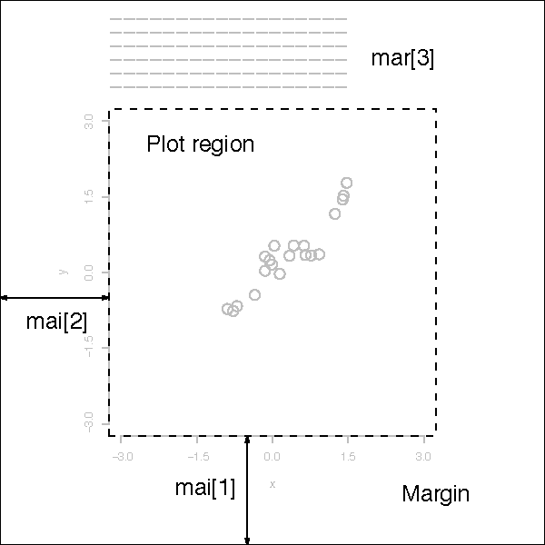

adjThe value of adj determines the way in
which text strings are justified in text,
mtext and title. A value of 0 produces
left-justified text, 0.5 (the default) centered text and 1
right-justified text. (Any value in [0, 1] is allowed, and
on most devices values outside that interval will also work.)
Note that the adj argument of text also
allows adj = c(x, y) for different adjustment in x- and y-
directions. Note that whereas for text it refers to
positioning of text about a point, for mtext and
title it controls placement within the plot or device region.
annIf set to FALSE, high-level plotting
functions calling plot.default do not annotate the
plots they produce with axis titles and overall titles. The
default is to do annotation.
asklogical. If TRUE (and the R session is
interactive) the user is asked for input, before a new figure is
drawn. As this applies to the device, it also affects output by
packages grid and lattice. It can be set even on
non-screen devices but may have no effect there.
This not really a graphics parameter, and its use is deprecated in
favour of devAskNewPage.
bgThe color to be used for the background of the
device region. When called from par() it also sets
new = FALSE. See section ‘Color Specification’ for
suitable values. For many devices the initial value is set from
the bg argument of the device, and for the rest it is
normally "white".
Note that some graphics functions such as
plot.default and points have an
argument of this name with a different meaning.
btyA character string which determined the type of
box which is drawn about plots. If bty is
one of "o" (the default), "l", "7",
"c", "u", or "]" the resulting box resembles
the corresponding upper case letter. A value of "n"
suppresses the box.
cexA numerical value giving the amount by which
plotting text and symbols should be magnified relative to the
default. This starts as 1 when a device is opened, and is
reset when the layout is changed, e.g. by setting mfrow.
Note that some graphics functions such as
plot.default have an argument of this name
which multiplies this graphical parameter, and some
functions such as points and text
accept a vector of values which are recycled.
cex.axisThe magnification to be used for axis
annotation relative to the current setting of cex.
cex.labThe magnification to be used for x and y
labels relative to the current setting of cex.
cex.mainThe magnification to be used for main titles
relative to the current setting of cex.
cex.subThe magnification to be used for sub-titles
relative to the current setting of cex.
cinR.O.; character size
(width, height) in inches. These are the same measurements
as cra, expressed in different units.
colA specification for the default plotting color. See section ‘Color Specification’.
Some functions such as lines and text
accept a vector of values which are recycled and may be
interpreted slightly differently.
col.axisThe color to be used for axis
annotation. Defaults to "black".
col.labThe color to be used for x and y labels.
Defaults to "black".
col.mainThe color to be used for plot main titles.
Defaults to "black".
col.subThe color to be used for plot sub-titles.
Defaults to "black".
craR.O.; size of default character
(width, height) in ‘rasters’ (pixels). Some devices
have no concept of pixels and so assume an arbitrary pixel size,
usually 1/72 inch. These are the same measurements
as cin, expressed in different units.
crtA numerical value specifying (in degrees) how
single characters should be rotated. It is unwise to expect
values other than multiples of 90 to work. Compare with
srt which does string rotation.
csiR.O.; height of (default-sized)
characters in inches. The same as par("cin")[2].
cxyR.O.; size of default character
(width, height) in user coordinate units.
par("cxy") is par("cin")/par("pin") scaled to user
coordinates.
Note that c(strwidth(ch), strheight(ch)) for
a given string ch is usually much more precise.
dinR.O.; the device dimensions,
(width, height), in inches. See also
dev.size, which is updated immediately when an
on-screen device windows is re-sized.
err(Unimplemented; R is silent when points outside the plot region are not plotted.) The degree of error reporting desired.
familyThe name of a font family for drawing text.
The maximum allowed length is 200 bytes.
This name gets mapped by each graphics device to a device-specific
font description. The default value is "" which means that
the default device fonts will be used (and what those are should
be listed on the help page for the device). Standard values are
"serif", "sans" and "mono", and the
Hershey font families are also available. (Devices may
define others, and some devices will ignore this setting
completely. Names starting with "Hershey" are treated
specially and should only be used for the built-in Hershey font
families.) This can be specified inline for text.
fgThe color to be used for the foreground of plots.
This is the default color used for things like axes and boxes
around plots. When called from par() this also sets
parameter col to the same value. See section ‘Color
Specification’. A few devices have an argument to set the
initial value, which is otherwise "black".
figA numerical vector of the form c(x1, x2, y1,
y2) which gives the (NDC) coordinates of the figure region in
the display region of the device. If you set this, unlike S, you
start a new plot, so to add to an existing plot use
new = TRUE as well.
finThe figure region dimensions,
(width, height), in inches. If you set this, unlike S, you
start a new plot.
fontAn integer which specifies which font to use for
text. If possible, device drivers arrange so that 1 corresponds
to plain text (the default), 2 to bold face, 3 to italic and 4 to
bold italic. Also, font 5 is expected to be the symbol font, in
Adobe symbol encoding. On some devices font families can be
selected by family to choose different sets of 5 fonts.
font.axisThe font to be used for axis annotation.
font.labThe font to be used for x and y labels.
font.mainThe font to be used for plot main titles.
font.subThe font to be used for plot sub-titles.
labA numerical vector of the form c(x, y, len)
which modifies the default way that axes are annotated. The values of
x and y give the (approximate) number of tickmarks
on the x and y axes and len specifies the label length. The
default is c(5, 5, 7). Note that this only affects the way
the parameters xaxp and yaxp are set when the user
coordinate system is set up, and is not consulted when axes are drawn.
len is unimplemented in R.
lasnumeric in {0,1,2,3}; the style of axis labels.
- 0:
always parallel to the axis [default],
- 1:
always horizontal,
- 2:
always perpendicular to the axis,
- 3:
always vertical.
Also supported by mtext. Note that
string/character rotation via argument srt to par
does not affect the axis labels.
lendThe line end style. This can be specified as an integer or string:
0and
"round"mean rounded line caps [default];1and
"butt"mean butt line caps;2and
"square"mean square line caps.
lheightThe line height multiplier.
The height of a line of text (used to vertically space
multi-line text) is found by multiplying the character height
both by the current character expansion and by the
line height multiplier. Default value is 1. Used in
text and strheight.
ljoinThe line join style. This can be specified as an integer or string:
0and
"round"mean rounded line joins [default];1and
"mitre"mean mitred line joins;2and
"bevel"mean bevelled line joins.
lmitreThe line mitre limit. This controls when mitred line joins are automatically converted into bevelled line joins. The value must be larger than 1 and the default is 10. Not all devices will honour this setting.
ltyThe line type.
Line types can either be specified as an integer (0=blank, 1=solid
(default), 2=dashed, 3=dotted, 4=dotdash, 5=longdash, 6=twodash)
or as one of the character strings "blank", "solid",
"dashed", "dotted", "dotdash",
"longdash", or "twodash", where "blank" uses
‘invisible lines’ (i.e., does not draw them).
Alternatively, a string of up to 8 characters (from c(1:9,
"A":"F")) may be given, giving the length of line segments
which are alternatively drawn and skipped. See section
‘Line Type Specification’.
Functions such as lines and segments
accept a vector of values which are recycled.
lwdThe line width, a positive number,
defaulting to 1. The interpretation is device-specific,
and some devices do not implement line widths less than one.
(See the help on the device for details of the interpretation.)
Functions such as lines and segments
accept a vector of values which are recycled: in such uses lines
corresponding to values NA or NaN are omitted. The
interpretation of 0 is device-specific.
maiA numerical vector of the form c(bottom,
left, top, right) which gives the margin size specified in
inches.

marA numerical vector of the form c(bottom,
left, top, right) which gives the number of lines of margin to be
specified on the four sides of the plot.
The default is c(5, 4, 4, 2) + 0.1.
mexmex is a character size expansion factor which is used to
describe coordinates in the margins of plots. Note that this does
not change the font size, rather specifies the size of font (as a
multiple of csi) used to convert between mar and
mai, and between oma and omi.
This starts as 1 when the device is opened, and is reset
when the layout is changed (alongside resetting cex).
mfcol, mfrowA vector of the form c(nr, nc).
Subsequent figures will be drawn in an nr-by-nc
array on the device by columns (mfcol), or
rows (mfrow), respectively.
In a layout with exactly two rows and columns the base value of
"cex" is reduced by a factor of 0.83: if there are three or
more of either rows or columns, the reduction factor is 0.66.
Setting a layout resets the base value of cex and that of
mex to 1.
If either of these is queried it will give the current layout, so querying cannot tell you the order in which the array will be filled.
Consider the alternatives, layout and
split.screen.
mfgA numerical vector of the form c(i, j)
where i and j indicate which figure in an array of
figures is to be drawn next (if setting) or is being drawn (if
enquiring). The array must already have been set by mfcol
or mfrow.
For compatibility with S, the form c(i, j, nr, nc) is also
accepted, when nr and nc should be the current
number of rows and number of columns. Mismatches will be ignored,
with a warning.
mgpThe margin line (in mex units) for the axis
title, axis labels and axis line. Note that mgp[1] affects
title whereas mgp[2:3] affect axis.
The default is c(3, 1, 0).
mkhThe height in inches of symbols to be drawn when
the value of pch is an integer. Completely ignored in R.
newlogical, defaulting to FALSE. If set to
TRUE, the next high-level plotting command (actually
plot.new) should not clean the frame before
drawing as if it were on a new device. It is
an error (ignored with a warning) to try to use new = TRUE
on a device that does not currently contain a high-level plot.
omaA vector of the form c(bottom, left, top,
right) giving the size of the outer margins in lines of text.

omdA vector of the form c(x1, x2, y1, y2)
giving the region inside outer margins in NDC (=
normalized device coordinates), i.e., as a fraction (in [0, 1])
of the device region.
omiA vector of the form c(bottom, left, top,
right) giving the size of the outer margins in inches.
pageR.O.; A boolean value indicating
whether the next call to plot.new is going
to start a new page. This value may be FALSE if there
are multiple figures on the page.
pchEither an integer specifying a symbol or a single
character to be used as the default in plotting points. See
points for possible values and their interpretation.
Note that only integers and single-character strings can
be set as a graphics parameter (and not NA nor NULL).
Some functions such as points accept a vector of values
which are recycled.
pinThe current plot dimensions, (width, height),
in inches.
pltA vector of the form c(x1, x2, y1, y2)
giving the coordinates of the plot region as fractions of the
current figure region.
psinteger; the point size of text (but not symbols). Unlike
the pointsize argument of most devices, this does not change
the relationship between mar and mai (nor oma
and omi).
What is meant by ‘point size’ is device-specific, but most devices mean a multiple of 1bp, that is 1/72 of an inch.
ptyA character specifying the type of plot region to
be used; "s" generates a square plotting region and
"m" generates the maximal plotting region.
smo(Unimplemented) a value which indicates how smooth circles and circular arcs should be.
srtThe string rotation in degrees. See the comment
about crt. Only supported by text.
tckThe length of tick marks as a fraction of the
smaller of the width or height of the plotting region.
If tck >= 0.5 it is interpreted as a fraction of the
relevant side, so if tck = 1 grid lines are drawn. The
default setting (tck = NA) is to use tcl = -0.5.
tclThe length of tick marks as a fraction of the
height of a line of text. The default value is -0.5;
setting tcl = NA sets tck = -0.01 which is S' default.
usrA vector of the form c(x1, x2, y1, y2)
giving the extremes of the user coordinates of the plotting
region. When a logarithmic scale is in use (i.e.,
par("xlog") is true, see below), then the x-limits will be
10 ^ par("usr")[1:2]. Similarly for the y-axis.
xaxpA vector of the form c(x1, x2, n) giving
the coordinates of the extreme tick marks and the number of
intervals between tick-marks when par("xlog") is false.
Otherwise, when log coordinates are active, the three
values have a different meaning: For a small range, n is
negative, and the ticks are as in the linear case,
otherwise, n is in 1:3, specifying a case number,
and x1 and x2 are the lowest and highest power of 10
inside the user coordinates, 10 ^ par("usr")[1:2]. (The
"usr" coordinates are log10-transformed here!)
- n = 1
will produce tick marks at 10^j for integer j,
- n = 2
gives marks k 10^j with k in {1,5},
- n = 3
gives marks k 10^j with k in {1,2,5}.
See axTicks() for a pure R implementation of this.
This parameter is reset when a user coordinate system is set up,
for example by starting a new page or by calling
plot.window or setting par("usr"): n
is taken from par("lab"). It affects the default behaviour
of subsequent calls to axis for sides 1 or 3.
It is only relevant to default numeric axis systems, and not for example to dates.
xaxsThe style of axis interval calculation to be used
for the x-axis. Possible values are "r", "i",
"e", "s", "d". The styles are generally
controlled by the range of data or xlim, if given.
Style "r" (regular) first extends the data range by 4
percent at each end and then finds an axis with pretty labels
that fits within the extended range.
Style "i" (internal) just finds an axis with pretty labels
that fits within the original data range.
Style "s" (standard) finds an axis with pretty labels
within which the original data range fits.
Style "e" (extended) is like style "s", except that
it is also ensures that there is room for plotting symbols within
the bounding box.
Style "d" (direct) specifies that the current axis should
be used on subsequent plots.
(Only "r" and "i" styles have been
implemented in R.)
xaxtA character which specifies the x axis type.
Specifying "n" suppresses plotting of the axis. The
standard value is "s": for compatibility with S values
"l" and "t" are accepted but are equivalent to
"s": any value other than "n" implies plotting.
xlogA logical value (see log in
plot.default). If TRUE, a logarithmic scale
is in use (e.g., after plot(*, log = "x")).
For a new device, it defaults to FALSE, i.e., linear scale.
xpdA logical value or NA.
If FALSE, all plotting is clipped to the plot region, if
TRUE, all plotting is clipped to the figure region, and if
NA, all plotting is clipped to the device region. See also
clip.
yaxpA vector of the form c(y1, y2, n) giving
the coordinates of the extreme tick marks and the number of
intervals between tick-marks unless for log coordinates, see
xaxp above.
yaxsThe style of axis interval calculation to be used
for the y-axis. See xaxs above.
yaxtA character which specifies the y axis type.
Specifying "n" suppresses plotting.
ylbiasA positive real value used in the positioning
of text in the margins by axis and
mtext. The default is in principle device-specific,
but currently 0.2 for all of R's own devices. Set this to
0.2 for compatibility with R < 2.14.0 on x11 and
windows() devices.
ylogA logical value; see xlog above.